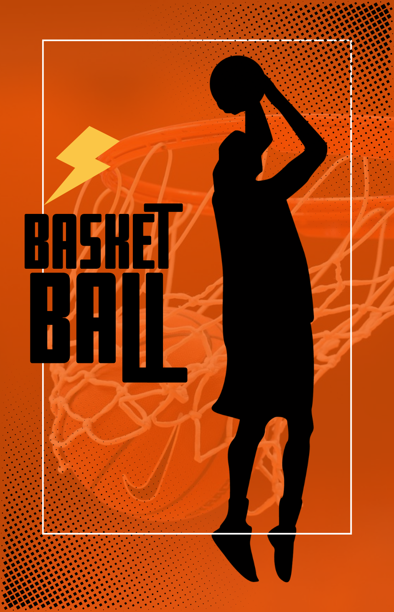
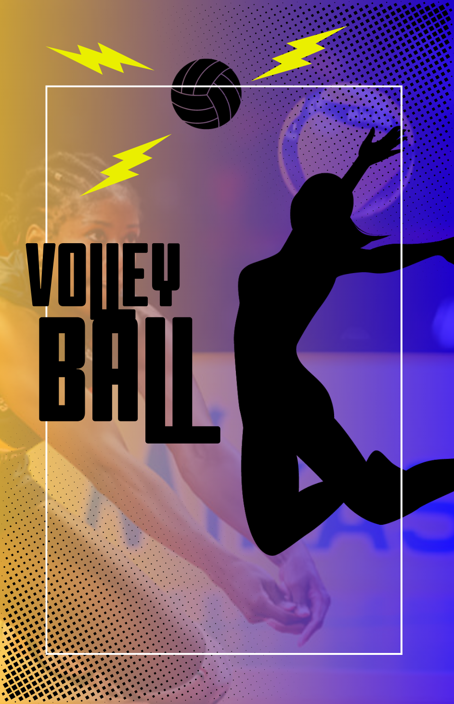
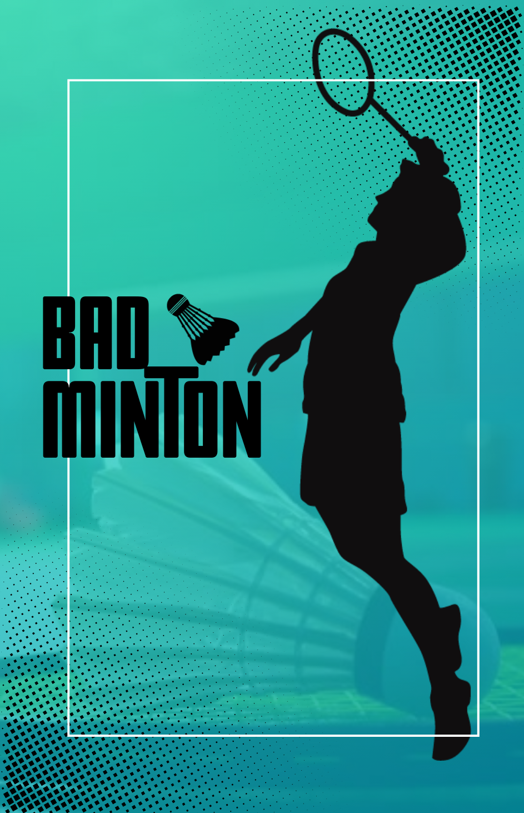
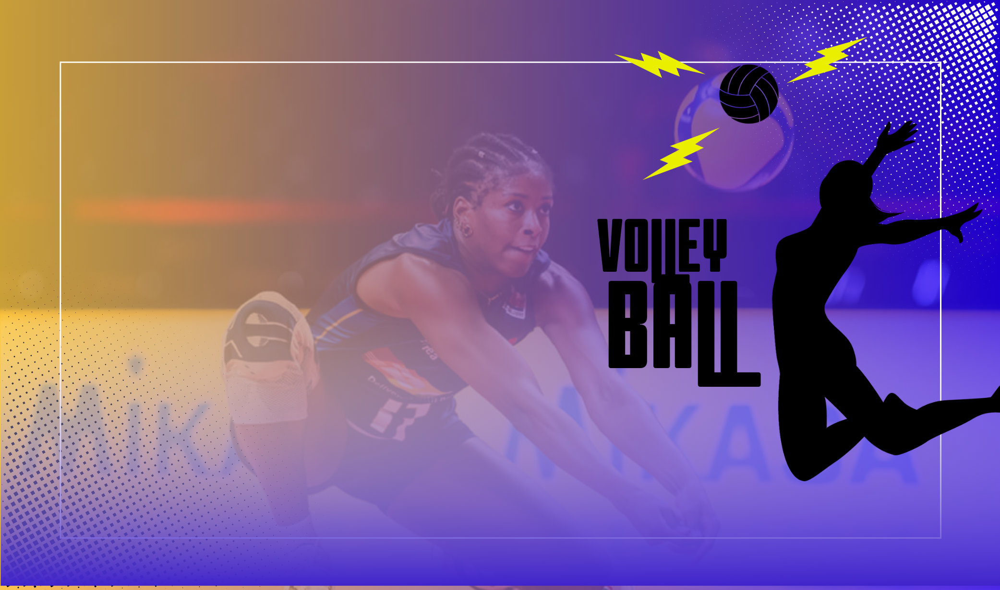

The world of basketball is a vibrant tapestry woven with threads of athleticism, strategy, and passion. From the echoing roar of the crowd in packed arenas to the quiet focus of a player practicing their shot, basketball is a sport that resonates on multiple levels.
It's a game of skill and finesse, where players dance across the court, weaving through defenses with lightning-fast ribbling and pinpoint passes. It's a game of power and precision, where soaring dunks and thunderous blocks leave audiences breathless. But beyond the spectacular plays, basketball is a story of teamwork, where individual talents converge to create a unified force. It's a sport that transcends borders and cultures, uniting fans from every corner of the globe in a shared love for the game. Whether you're a seasoned fan or a curious newcomer, the world of basketball offers a captivating journey filled with excitement, inspiration, and the thrill of the unexpected.
Get ready to be blown away by "Little Giant Volleyball," a cinematic promo video that captures the heart-pounding intensity of this beloved sport. Prepare for a visual feast of powerful spikes, impressive blocks, and skillful digs, all brought to life with dramatic music and slow-motion shots that highlight the raw athleticism and precision of each play. The video emphasizes the team aspect of volleyball, showcasing the crucial role of communication and collaboration in achieving victory.
"Little Giant Volleyball" is more than just a promo; it's a testament to the spirit of the game, and likely focuses on a specific player or team known for their remarkable skill and determination despite their size. This video is a powerful reminder of the passion and dedication that drives volleyball players, and is sure to inspire both seasoned fans and newcomers alike.

Badminton, a sport of speed, agility, and precision, is a captivating dance of strategy and athleticism played on a rectangular court. Two opposing players (singles) or two opposing pairs (doubles) stand on opposite halves of the court, separated by a net, and compete to hit a shuttlecock over the net and into their opponent's half.
The beauty of badminton lies in its dynamic nature. Players move with lightning-fast reflexes, covering the court with incredible speed and agility. They strike the shuttlecock with a variety of shots, from powerful smashes that send the shuttlecock hurtling towards the opponent's court to delicate drop shots that fall just over the net. Every point is a battle of wits and skill, as players anticipate their opponent's movements and react with precision.